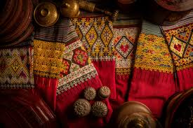
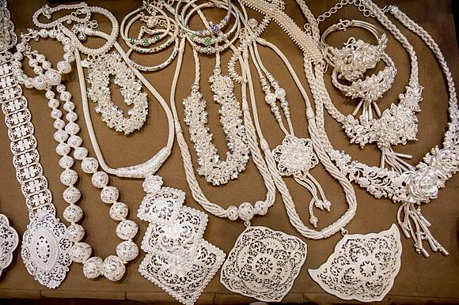
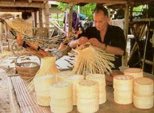
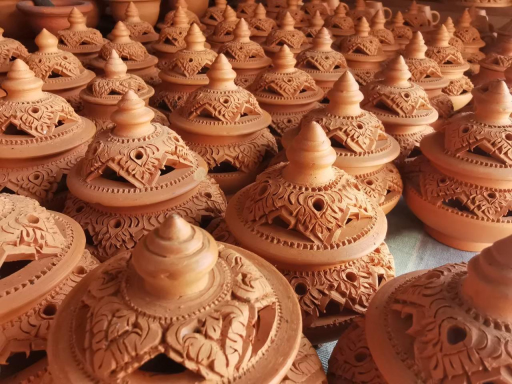
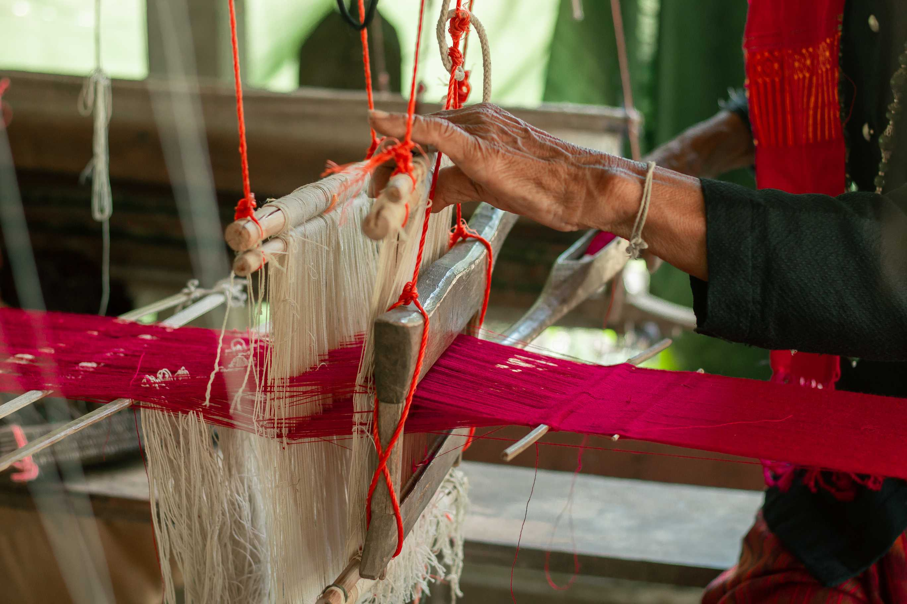
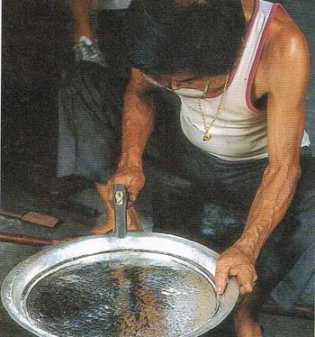
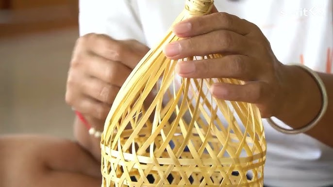

ประเภทของหัตถกรรมล้านนา

ผ้าทอล้านนา
เช่น ผ้ายกดอก ผ้าซิ่นตีนจก ผ้าซิ่นหมี่ คาดหัว (ผ้าโพกหัว) ที่มีลวดลายและสีสันเฉพาะถิ่น

เครื่องเงินล้านนา
งานฝีมือเครื่องเงินที่มีชื่อเสียงจากเชียงใหม่และเชียงราย เช่น สร้อยคอ กำไล แหวน และเครื่องใช้ต่างๆ

เครื่องจักสาน
ผลิตภัณฑ์จากไม้ไผ่และหวาย เช่น กระบุง ตะกร้า กระทง ไซดักปลา และเครื่องใช้ในครัวเรือน

เครื่องปั้นดินเผา
เครื่องปั้นดินเผาแบบล้านนา เช่น กระถาง โอ่งน้ำ ไห และเครื่องใช้ที่มีลวดลายเฉพาะตัว
แหล่งหัตถกรรมสำคัญ
- บ้านศรีเมือง - แหล่งผลิตผ้าทอพื้นเมืองอันเลื่องชื่อของเชียงใหม่
- บ้านวัวลาย - แหล่งผลิตเครื่องเงินโบราณที่สำคัญของเชียงใหม่
- บ้านถวาย - หัตถกรรมไม้แกะสลักและเครื่องเรือนไม้สัก
- บ้านสันกำแพง - ผ้าฝ้ายทอมือและผ้าไหมพื้นเมือง
- ร่มบ่อสร้าง - งานฝีมือร่มกระดาษสาและร่มผ้า
กระบวนการสร้างสรรค์หัตถกรรมล้านนา

กระบวนการทอผ้า
เริ่มจากการปลูกฝ้าย ย้อมสีธรรมชาติ จากนั้นนำมาทอด้วยกี่พื้นบ้าน ลวดลายจะถูกออกแบบและทอด้วยความประณีต

กระบวนการทำเครื่องเงิน
เริ่มจากการหลอมเงินบริสุทธิ์ ตีเป็นแผ่น แล้วแกะสลักลวดลายตามแบบล้านนา เช่น ลายก้านขด ลายดอกประจำยาม

กระบวนการจักสาน
เริ่มจากการตัดไม้ไผ่หรือหวาย สับเป็นเส้น แล้วนำมาสานเป็นลวดลายต่างๆ ตามรูปแบบดั้งเดิม